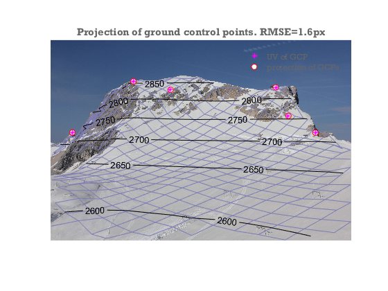

Schneefernerkopf example using data from PRACTISE
The PRACTISE (Photo Rectification And ClassificaTIon SoftwarE) open source package has an example data set from Schneefernerkopf, southern Germany (supplementary data to Hörer et al. 2013) . Here, we show how you can use the ImGRAFT camera model on this data set. The example data set is also attached below.
Hörer, S., Bernhardt, M., Corripio, J. G., & Schulz, K. (2013). PRACTISE Photo Rectification And ClassificaTIon SoftwarE (V. 1.0). Geoscientific Model Development
Note this example needs the matlab mapping toolbox for loading the DEM.
close all
%load data
datafolder=downloadDemoData('practise');
A=imread(fullfile(datafolder,'ufs20110511_0815_4dot5Mpx.jpg'));
gcpA=load(fullfile(datafolder,'GCPortho6_4dot5Mpx.txt'));
load(fullfile(datafolder,'dem30m.mat'));
[X,Y]=meshgrid(x,y);
%camera location as given in practise:
camxyz=[649299.97, 5253358.26];
camxyz(3)=interp2(X,Y,dem,camxyz(1),camxyz(2),'spline')+1.5;
%initial guess camera parameters: (also from practise)
FocalLength=31; %mm
SensorSize=[22.3 14.9]; %mm
imgsz=size(A);
f=imgsz([2 1]).*(FocalLength./SensorSize);
camA=camera(camxyz,size(A),[225 0 0]*pi/180,f); %approximate look direction.
% In this example I allow the camera-z coordinate to be free because the DEM
% is only 30m resolution, and also because the viewshed appears inconsistent
% with the 1.5m elevation. I also fit a 1 parameter radial distortion model
% because AIC tells me that it is a better model.
%
% We optimize camera elevation, 3 viewdir angles, 2 focal lengths, 1 radial distortion coefficient.
[camA,rmse,aic]=camA.optimizecam(gcpA(:,1:3),gcpA(:,4:5),'00100111110010000000');
fprintf('reprojectionerror=%3.1fpx AIC:%4.0f\n',rmse,aic)
%visualize the output
image(A)
axis equal off tight
hold on
%project the DEM onto the camera plane
[uvDEM,~,inframe]=camA.project([X(:),Y(:),dem(:)]);
%Hide DEM points that are not visible from the camera:
vis=voxelviewshed(X,Y,dem,camA.xyz);
uvDEM(~(inframe&vis(:)),:)=nan;
%show DEM as a mesh with labelled contours on top.
mesh(reshape(uvDEM(:,1),size(dem)),reshape(uvDEM(:,2),size(dem)),dem*0,'facecolor','none','edgecolor',[.7 .7 1]*.7)
[c,h]=contour(reshape(uvDEM(:,1),size(dem)),reshape(uvDEM(:,2),size(dem)),dem,[2600:50:3000],'k');
clabel(c,h)
%Show GCPs and reprojected GCPs
uvGCP=camA.project(gcpA(:,1:3));
h=plot(uvGCP(:,1),uvGCP(:,2),'ro',gcpA(:,4),gcpA(:,5),'m*','markerfacecolor','w');
legend(h([2 1]),'UV of GCP','projection of GCPs','location','northeast')
title(sprintf('Projection of ground control points. RMSE=%.1fpx',rmse))
Warning: Columns of data containing NaN values have been ignored during
interpolation.
reprojectionerror=1.6px AIC: 16
